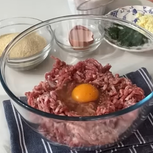
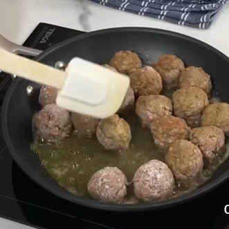
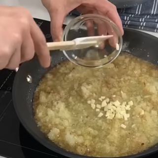
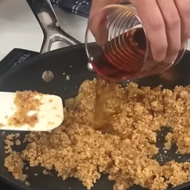
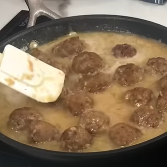
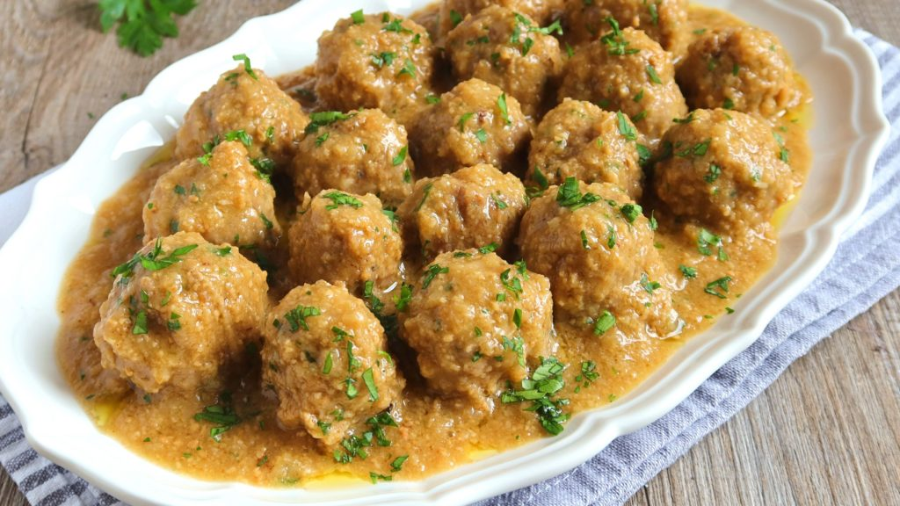

Para 4 personas:
Prepara la carne de las albóndigas con salsa de almendras. Pon en un bol los 400g de carne picada, el huevo, sal y pimienta, las 2 ramas de perejil al gusto y 1 diente de ajo picado. Mezcla y añade las 2 cucharadas soperas de pan rallado. Sigue mezclando hasta que tenga consistencia. Forma las bolas con las manos pasándolas por harina.
Cocina las albóndigas. Fríe las albóndigas en una sartén con aceite y resérvalas. En esa misma sartén fríe 1 rebanada de pan y apártala. Reserva las albóndigas.
Pocha la cebolla y el diente de ajo también en la misma sartén para que coja todo el gusto de lo anterior.
Tritura los 50g de almendras con el pan frito anteriormente en la picadora. Añádelo a la cebolla y el ajo pochados. Incorpora los 100ml de coñac y deja cocer, una vez que pierda el alcohol, añade los 250ml de agua y pon a punto de sal.
Cocina todo junto. Cuando rompa a hervir, añade las albóndigas y deja cocer a fuego lento durante 15 minutos o hasta que veas que la salsa queda de la consistencia que te gusta y que las albóndigas están bien cocinadas por dentro. Finalmente, emplata las álbondigas y tendrás el plato listo.
Finalmente, nos quedará como resultado un plato de álbondigas jugosas junto a una salsa que acompaña muy bien a la carne gracias a su textura y su sabor exquisito.
